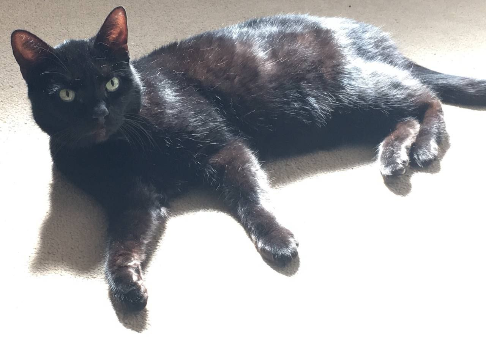
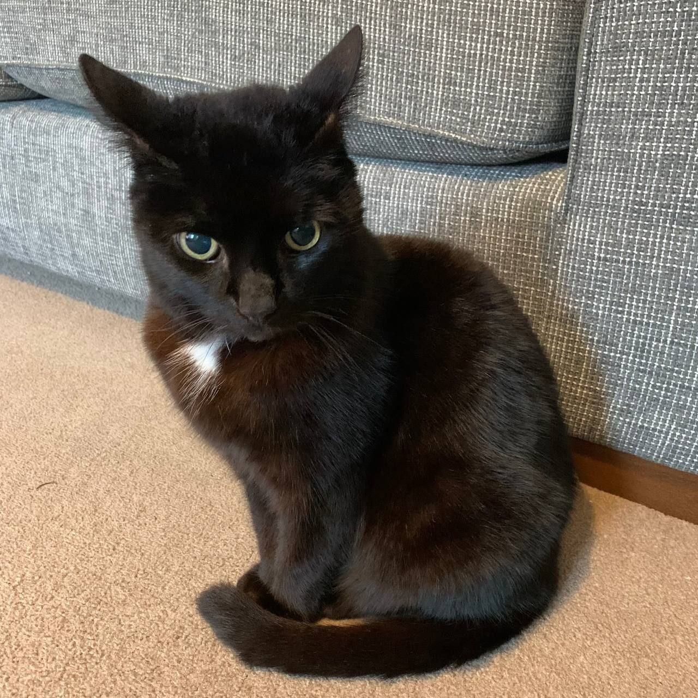
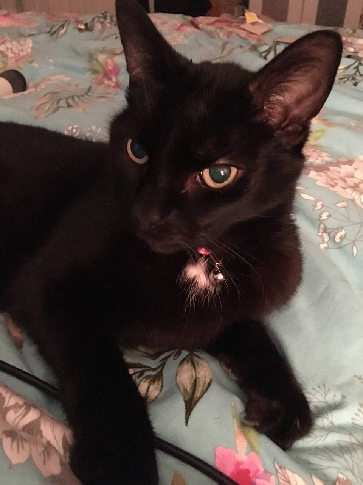

  
🌙 The Beginning
Magic was Suppo's beloved companion, a mystical black cat with golden eyes that seemed to see beyond the veil of reality. When Magic passed, his spirit chose to remain, becoming Suppo's guardian angel in the world of cryptocurrency.